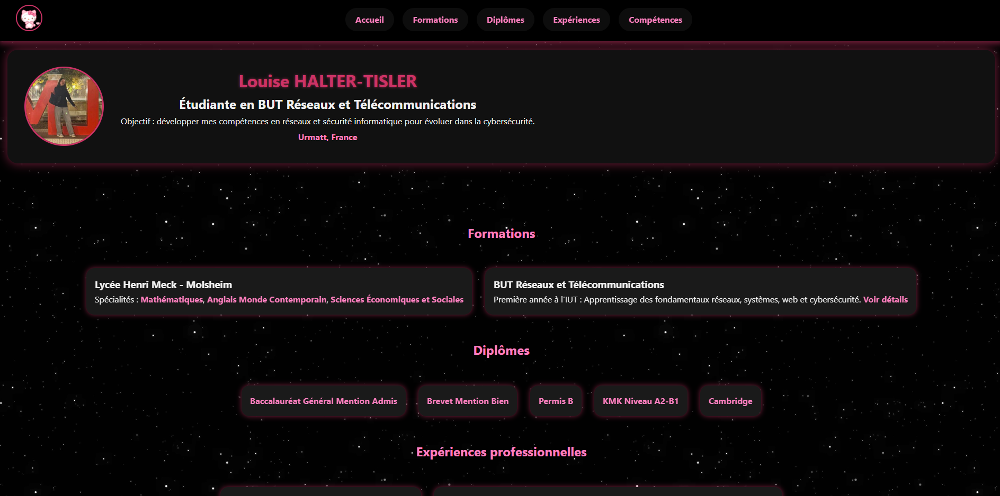

SAÉ 1.04
Se présenter sur internet
Objectif
Conception d'une vitrine numérique professionnelle pour mettre en valeur mon parcours. L'objectif principal était de maîtriser de bout en bout le processus de création.
Architecture réalisée
- Conception de l'architecture, maquettage et codage d'un site web personnel faisant office de CV en ligne.
- Utilisation des standards web actuels (HTML5, CSS3 avec Grid et Flexbox) pour structurer l'information de manière sémantique et garantir un design responsive, parfaitement fonctionnel sur desktop comme sur mobile.
- Configuration de l'environnement local pour la préparation avant le déploiement.
Compétences R&T mobilisées
- AC13.04 — Connaître l’architecture et les technologies d’un site Web.
- AC13.01 — Utiliser un système informatique et ses outils.
- AC13.02 — Lire, exécuter, corriger et modifier un programme.
- AC13.05 — Choisir les mécanismes de gestion de données adaptés au développement de l’outil et argumenter ses choix.
Technologies
Preuve
